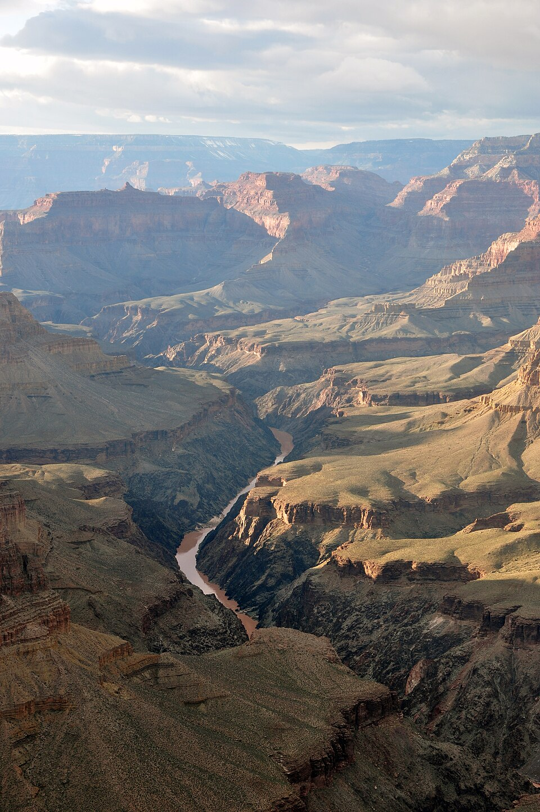
the Southwest
| Date | Destination | Drive | Sleep |
|---|---|---|---|
| Apr 20 | Valley of Fire NV | ~4.5 hrs | Atlatl Rock or Arch Rock CG |
| Apr 21 | Bullhead City → Silver Creek Rd (dirt) → Oatman → Kingman | ~4.5 hrs | Hotel |
| Apr 22–23 | Sedona — Red Rock Country | ~2.5 hrs | Pine Flat West #22 |
| Apr 24 | Sedona rest day | — | 3–4★ Hotel |
| Apr 25 | Edge of the World, AZ | ~2 hrs from hotel | East Pocket rim dispersed |
| Apr 26–28 | Grand Canyon South Rim | ~2 hrs | Desert View CG #24 |
| Apr 29 | Horseshoe Bend + Page | ~2.5 hrs | 3–4★ Hotel |
| Apr 30 | Antelope Slot Canyon | — | Lone Rock Beach BLM |
| May 1 | Muley Point, Cedar Mesa | ~2 hrs | BLM rim dispersed |
| May 2 | Kodachrome Basin / Grand Staircase | ~2.5 hrs | BLM dispersed |
| May 3–5 | Bryce Canyon NP | ~2 hrs | North CG Loop B #48 |
GPX files for OnX Offroad, Gaia GPS & Google Maps included as separate downloads.
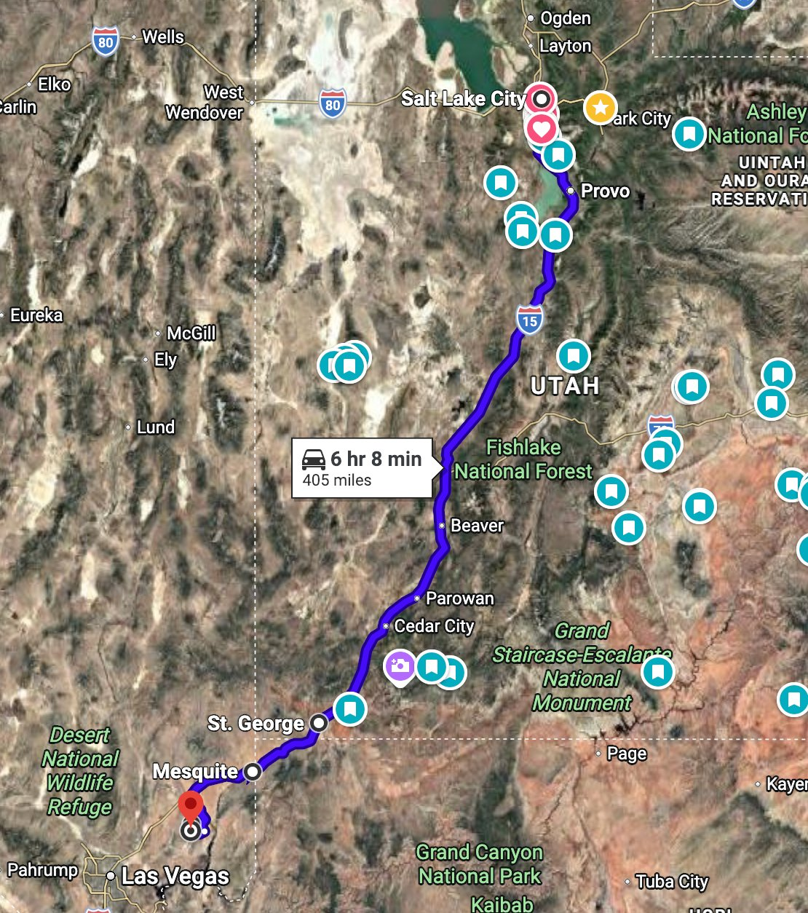
🗺 OPEN IN GOOGLE MAPS →🌄 What Today Feels Like
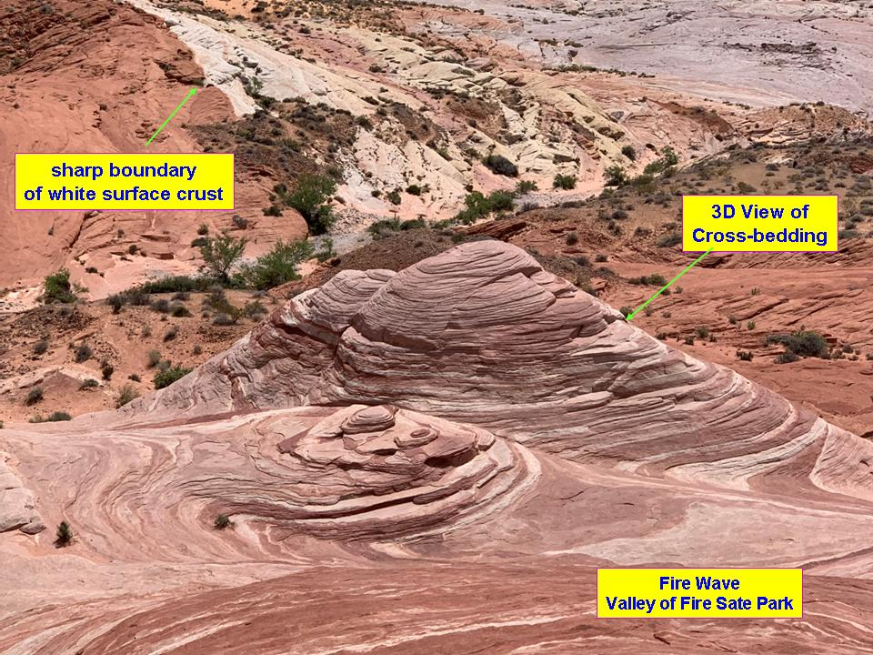
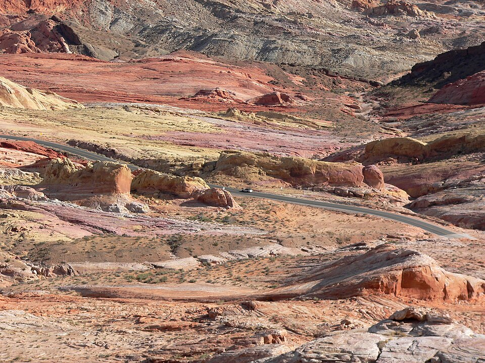
🎯 Choose Your Afternoon (arrive ~2–3 PM)
🥾 Hikes in Detail
🔥 Fire Wave Trail
🌀 White Domes Loop
🪨 Mouse's Tank / Petroglyph Canyon
🏕️ Camp Tonight
🥇 BLM West Hills — Best dispersed option Free dispersed camping tucked behind BLM hills just west of the park. Hills block prevailing W/SW desert winds — camp on the leeward (east-facing) side of ridges, not the exposed tops. Rock fire pits mark existing spots. 2–3 sites, private, hills all around. Confirmed by multiple overlanders at exact same coords. 📍 36.4137, -114.6169 Free · High clearance recommended for upper spots · 14-day limit
🥈 Logandale Trails BLM — Most wind-protected Camp inside red rock canyons — natural canyon walls block wind completely. 200+ miles of OHV trails, dispersed spots throughout. 11 miles from Valley of Fire. From I-15 exit 93 → SR-169 south → Liston Rd → follow signs 5.6 miles. 📍 Logandale Trails BLM Free · Some rough road sections · 14-day limit
🥉 Sand Mine Rd BLM — Easy sheltered access Lower elevation = less wind. Flat pull-offs with small berms and terrain folds for shelter. Quiet, away from highway. Any vehicle can access. 📍 Sand Mine Rd BLM Free · Easy access · First-come
- Where
- Mouse's Tank Road Viewpoint — park and climb the rocks south of the pullout. The road bends through a canyon of rounded boulders.
- Why It Matters
- The most-photographed scene in the park. Light goes nuclear orange on the red boulders. The road curves like a painting.
- Worth Crowds?
- Yes — April crowds here are minimal compared to Zion or Arches. Arrive 45 min before sunset. → Maps
- Fill up in St. George UT (I-15 exit) — last cheap gas before park
- Mesquite NV on I-15 also has gas, slightly pricier
- No fuel inside Valley of Fire — top off before entering
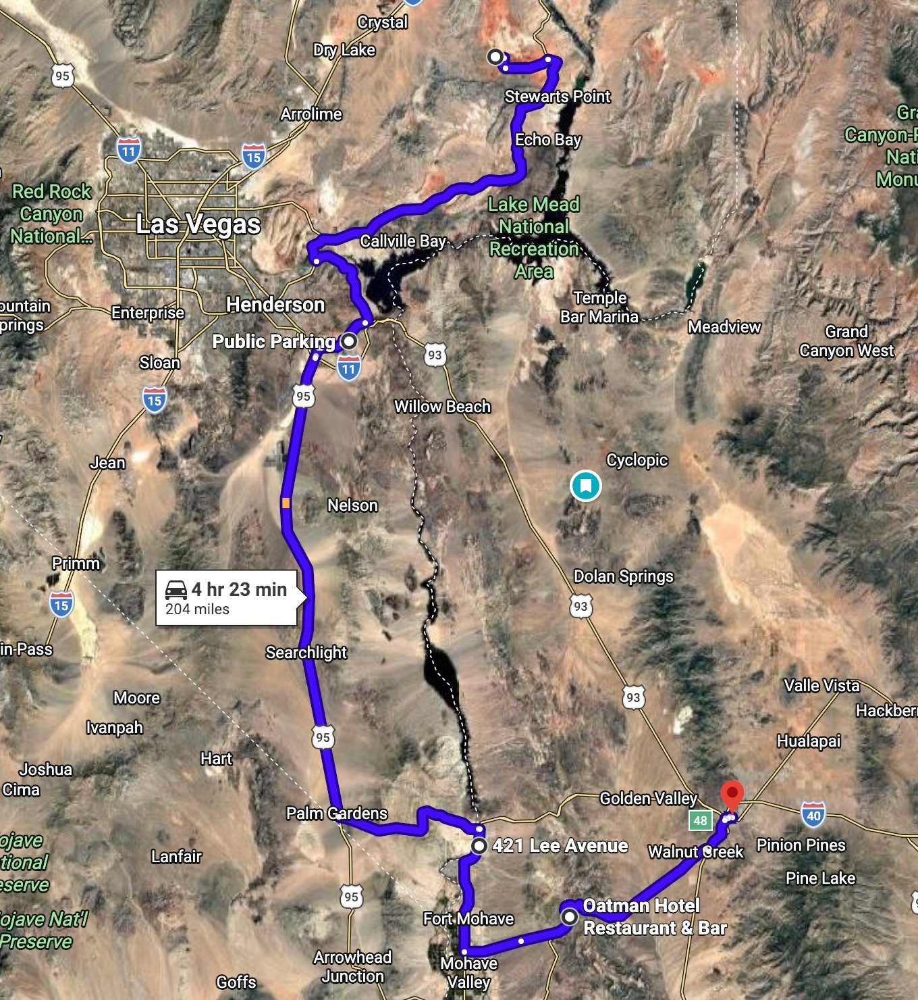
🗺 OPEN IN GOOGLE MAPS →The straight I-40 option gets you to Kingman faster but gives you nothing — just interstate and truck stops. This route costs 45 extra minutes and gives you: a proper dirt road warm-up for the trip ahead, a ghost town straight out of a western film, wild burros that will literally eat out of your hand, and the most scenic mountain pass on all of Historic Route 66. It's the difference between driving through the Southwest and actually experiencing it — which is the whole point of this trip.
🗺️ The Route — Segment by Segment
⏱️ Full Day Timeline
| Segment | Type | Distance | Time |
|---|---|---|---|
| Valley of Fire → Bullhead City | Paved highway | ~95 mi | ~1 hr 15 min |
| Bullhead City fuel stop | — | — | 20 min |
| Silver Creek Road (dirt) → Oatman | 🟢 Easy dirt road | ~14 mi | 45–60 min |
| Oatman stop — burros + lunch | Ghost town | — | 45–60 min |
| Oatman → Sitgreaves Pass → Kingman | Historic Route 66 | 28 mi | ~45 min |
| Total | ~137 mi | ~4–4.5 hrs |
Arrive Kingman by 2–3 PM with afternoon to settle in and plan tomorrow's Sedona drive over dinner.
🏨 Kingman Hotel Picks (~$90–130/night)
| Hotel | Est. Rate | Why Choose It | Book |
|---|---|---|---|
| Holiday Inn Express Kingman | $95–120 | Clean, solid breakfast, pool, easy highway access for rigs | ihg.com |
| Hampton Inn Kingman | $110–130 | Quieter, great parking for overland rig, consistent quality | hilton.com |
| Best Western Plus King's Inn | $85–105 | Budget option, decent amenities, right off I-40 | bestwestern.com |
- Fill completely in Bullhead City — no fuel on Silver Creek Rd
- Oatman has fuel but it's expensive and limited — don't rely on it
- Kingman has Costco (Andy Devine Ave) — fill up here for the Sedona drive
- Check BLM road conditions: (928) 718-3700

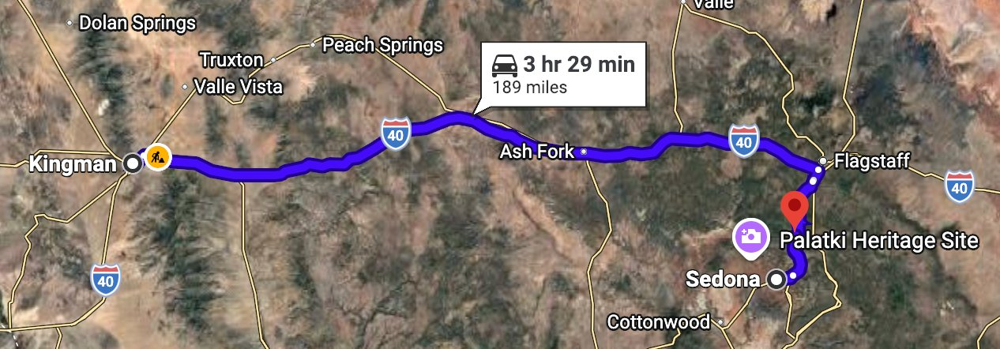
🗺 OPEN IN GOOGLE MAPS →89A mile marker 385, Oak Creek Canyon, Coconino National Forest. Direct Oak Creek access from your site — ponderosa pines, stocked trout, swimming holes. Vault toilets, drinking water. No hookups/showers.
📍 Google Maps → Pine Flat West | 📋 Recreation.gov Reservation | Red Rock Pass required for trailhead parking ($5/day)
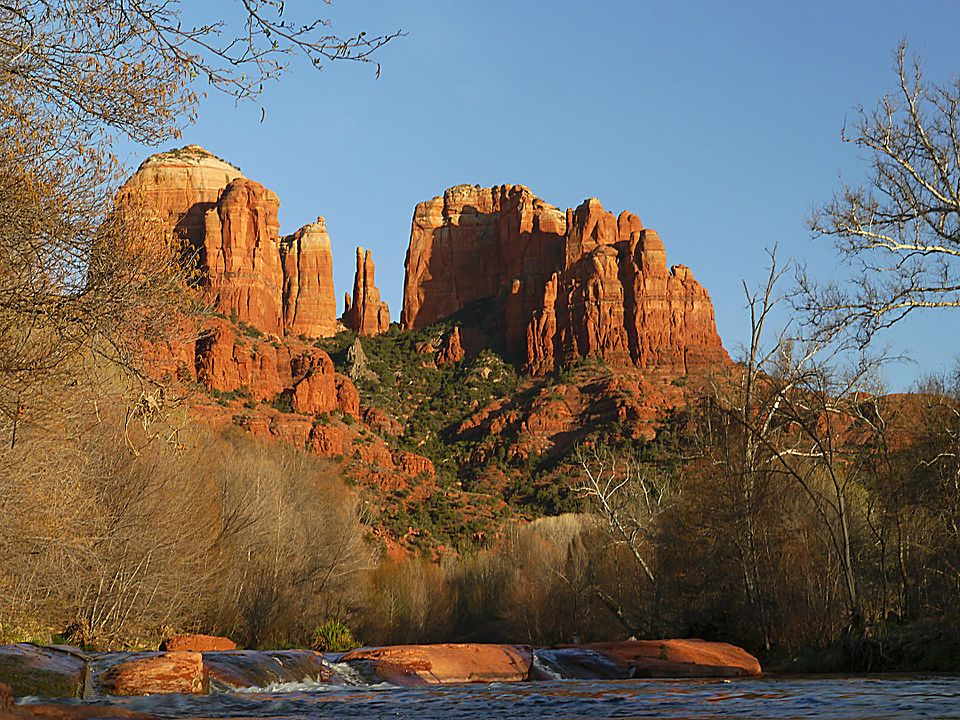
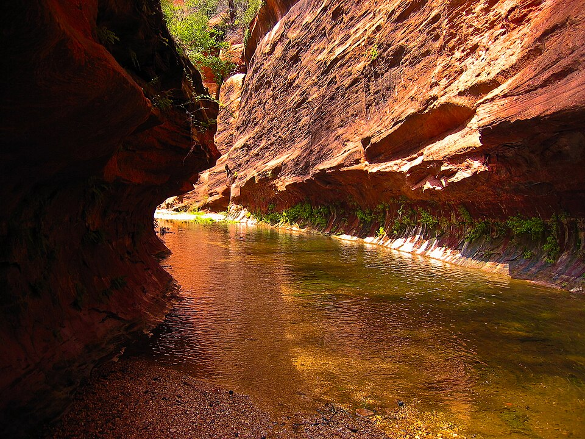
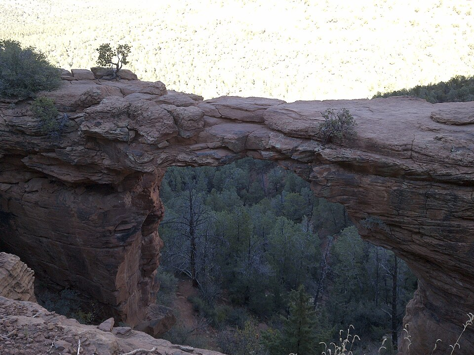
🎯 Day 1 (Apr 22) — Classic Icons
🎯 Day 2 (Apr 23) — Go Deeper
🥾 Featured Hikes
🌊 West Fork Trail
🌉 Devil's Bridge
⛪ Cathedral Rock
🏕️ Dispersed Camp Alternatives to Pine Flat
- Where
- Crescent Moon Ranch (Red Rock Crossing) — arrive 45 min before sunset. $11/car entry.
- Why It Matters
- Cathedral Rock turns blood-orange and reflects in Oak Creek below. One of the most photographed scenes in all of Arizona.
- Worth It?
- Absolutely. The $11 fee is well worth it. Arrive early for a good spot near the creek. → Maps
- Fill in Sedona/Village of Oak Creek ($0.20–0.40 more than Flagstaff)
- Flagstaff Costco (~30 min north) is cheapest in region
- Carry extra 2 gal if doing Schnebly Hill — no fuel until back in Sedona
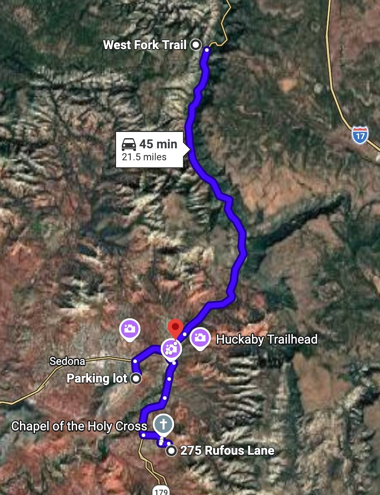
🗺 OPEN IN GOOGLE MAPS →🏨 Affordable 3–4★ Hotel Picks
| Hotel | Est. Rate (Apr) | Why Choose It | Book At |
|---|---|---|---|
| Sky Rock Inn of Sedona | $120–160/nt | Best value with a genuine view. Pool, comfortable, panoramic setting. | hotels.com |
| Arabella Hotel Sedona | $130–180/nt | Red rock views, pool, walkable to Uptown. Solid 4-star. | marriott.com |
| Sedona Real Inn & Suites | $100–140/nt | Comfortable, budget-friendly, great central location. | hotels.com |
| Matterhorn Inn | $110–150/nt | Small boutique, amazing canyon views, quiet and charming. | booking.com |
🎯 Light Day Activities
🍽️ Sedona Dinner Picks
Elote Café
Creative Mexican, chef Kent Rathbun. Often a wait — arrive at opening (5 PM). Worth it.
Mariposa Latin Grill
Best sunset views in Sedona, upscale Latin cuisine, excellent cocktails. Splurge-worthy.
Coffeepot Restaurant
Legendary Sedona breakfast — 101 omelets on the menu. Arrive early for no wait.
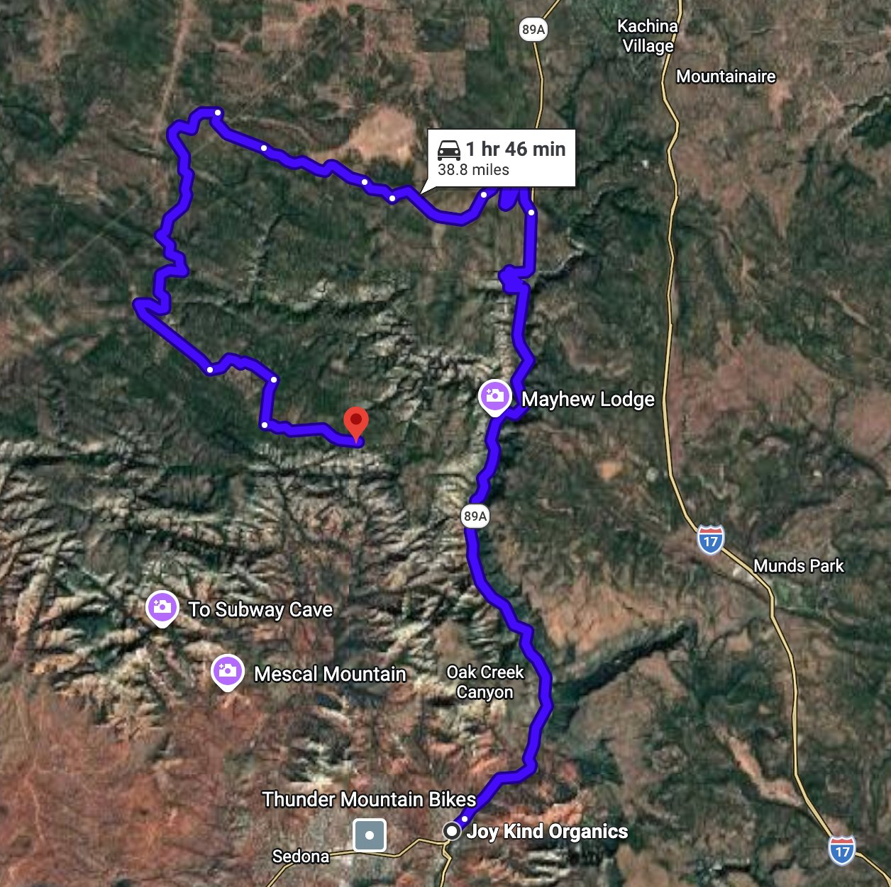
🗺 OPEN IN GOOGLE MAPS →🗺️ Getting There — Step by Step
1. From Sedona take AZ-89A north to Flagstaff (45 min)
2. In Flagstaff, head west on I-40 to Flagstaff Ranch Road exit
3. Turn south onto Kiltie Lane → Woody Mountain Road (FR 231)
4. Drive FR 231 south for ~26 miles — stay on the main road, ignore all offshoots
5. When trees break on the RIGHT with a cliff view → you've found Edge of the World
GPS: 34.979889, -111.794281 · Drive time from pavement: ~1.5 hours
📍 Edge of the World → Google Maps
🏕️ Camp Strategy
🌄 East Pocket Rim Walk
🗼 East Pocket Fire Lookout
- Where
- Stand on the cliff edge 20 minutes before sunset. Face south toward Sedona.
- Why It Matters
- From 5,700 feet above the canyon floor, the light layers work like a landscape painting. You're looking DOWN on Cathedral Rock.
- Worth It?
- You're already there. This is why you drove 26 miles of dirt. Zero crowds. This will be the image from the trip.
- Fill up in Flagstaff before FR 231 (Costco on E Butler is cheapest)
- No fuel on FR 231 — need at least 50 miles of reserve
- Round trip from pavement: ~55 miles off-road

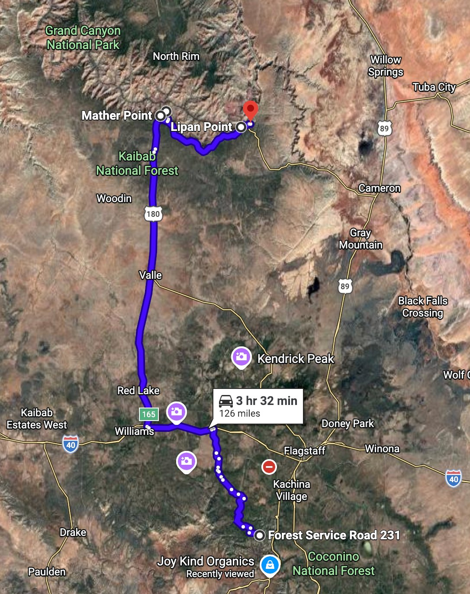
🗺 OPEN IN GOOGLE MAPS →25 miles east of Grand Canyon Village on Desert View Drive. Elevation 7,400 ft — pack layers, April nights drop to 30°F. Flush toilets, water, no hookups. Quieter than Mather CG, darker skies, closer to East Rim viewpoints.
📍 Google Maps → Desert View CG | 📋 Recreation.gov Reservation
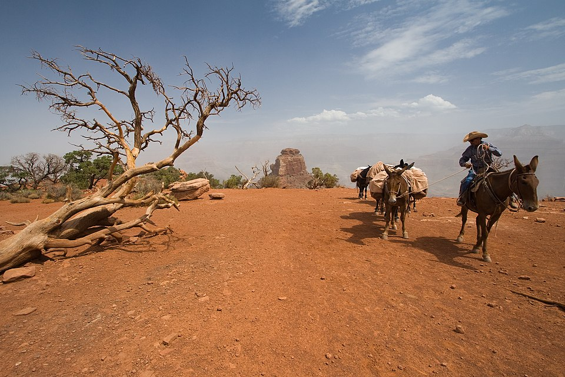
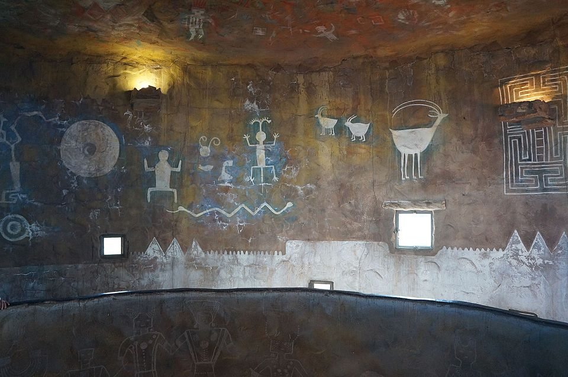
🎯 Three-Day Plan
🥾 Hikes in Detail
⬇️ South Kaibab → Cedar Ridge
🚶 East Rim Walk (from Desert View)
⛏️ Grandview Trail → Coconino Saddle
🏕️ Dispersed Camp Alternatives
- Where
- Mather Point (crowded but iconic) or Lipan Point (from your camp direction — same light, far fewer people)
- Why It Matters
- The canyon walls go from cream to gold to orange to blood-red in under 20 minutes. Nothing in photography class prepares you for this.
- Worth It?
- Unambiguously yes. Lipan Point at your camp end is nearly empty at sunset and equally spectacular. → Lipan Point Maps
- Fill at Cameron AZ Trading Post on Hwy 89 — last before Page
- Grand Canyon Village has fuel but $0.60–0.80/gal premium
- Desert View area: no fuel — top off at the village if low
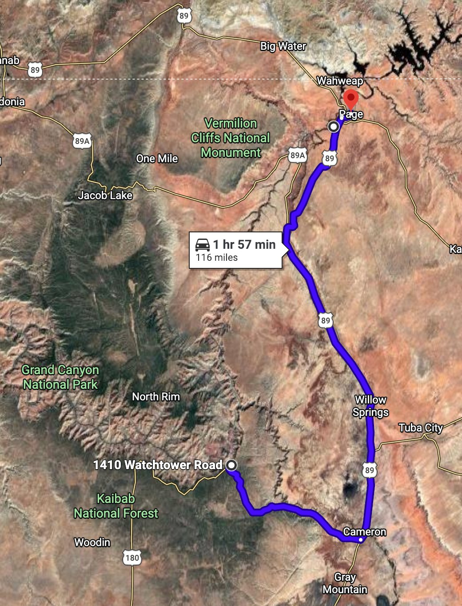
🗺 OPEN IN GOOGLE MAPS →📅 April 29 — Horseshoe Bend + Hotel Night
⚠️ Warning: No railings at the edge — every year people fall. Keep well back from the rim.
Best light: Afternoon 2–4 PM or sunrise (spectacular, nearly empty)
📍 Horseshoe Bend Trailhead → Google Maps
| Page Hotel | Est. Rate | Why Choose It | Book |
|---|---|---|---|
| Courtyard by Marriott Page/Lake Powell | $100–140/nt | Best in Page — pool, clean, great breakfast. Book early. | marriott.com |
| Holiday Inn Express Page | $90–120/nt | Reliable, pool, free breakfast, near Antelope Canyon turnoff. | ihg.com |
| Hyatt Place Page/Lake Powell | $110–150/nt | Newest hotel in Page. Modern, comfortable rooms. | hyatt.com |
📅 April 30 — Antelope Slot Canyon
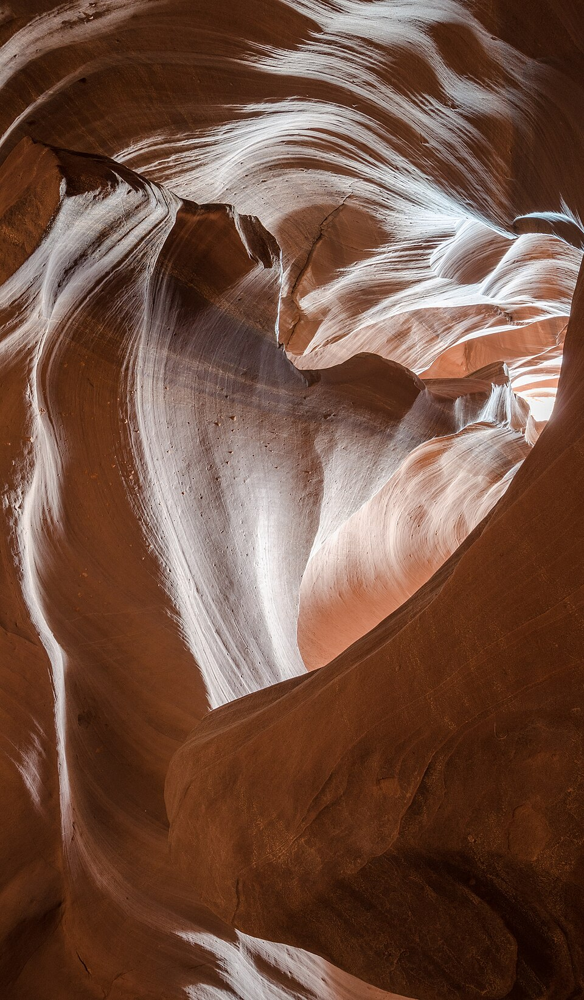
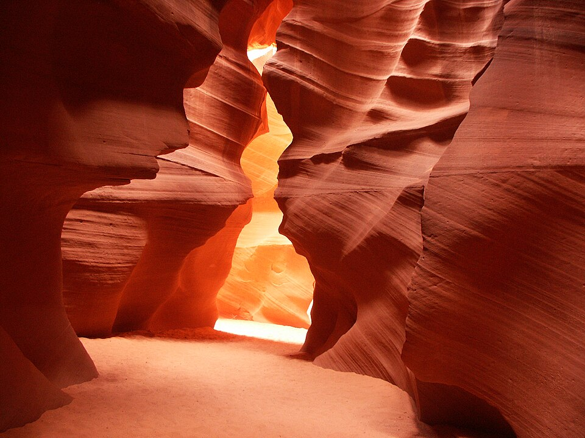
🏛️ Best Tour Recommendation
If you want the light beams: Book Upper Antelope Canyon at 11 AM–1 PM with Antelope Canyon Tours Inc. — but book now. Light beams are spring/summer only.
| Tour Company | Canyon | Duration | Price/Person | Book At |
|---|---|---|---|---|
| Ken's Tours | Lower | ~1 hr | ~$40 | lowerantelope.com |
| Dixie Ellis Tours | Lower | ~1 hr | ~$45 | antelopelowercanyon.com |
| Antelope Canyon Tours Inc. | Upper | ~1.5 hr | ~$75 | antelopecanyon.com |
| Antelope Canyon.az (combo) | Upper+Lower | ~3 hrs | ~$140 | antelopecanyon.az |
🏕️ BLM Dispersed Camp — Lone Rock Beach
- Fill completely in Page — Page → Muley Point via Mexican Hat is 100+ miles
- Mexican Hat Lodge has fuel (limited hours) — call: (435) 683-2220
- Bluff UT has a reliable gas station on Hwy 191
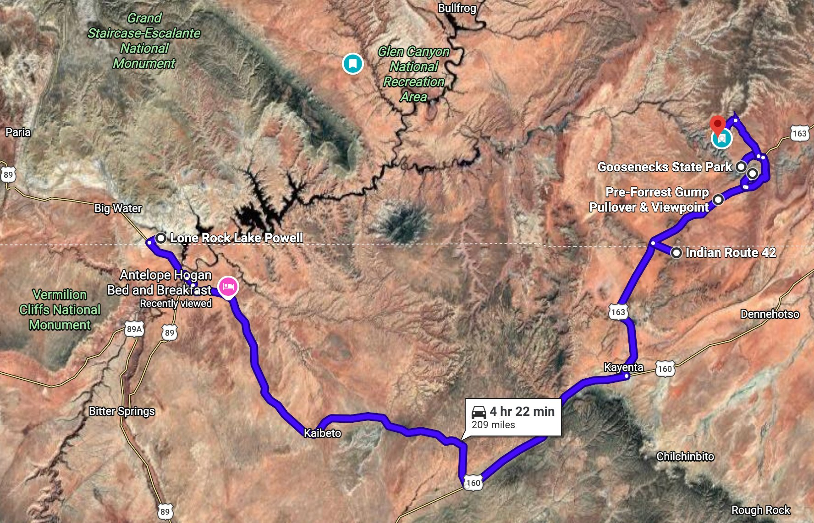
🗺 OPEN IN GOOGLE MAPS →Page → US-160 west (or Hwy 89 north to 98) → Kayenta → US-163 north through Monument Valley → Mexican Hat → UT-261 north past Goosenecks → climb Moki Dugway (3 mi, 11% grade, 15 mph, no guardrail — take your time!) → at top, immediate LEFT on Muley Point Road → drive 5 miles to rim
GPS: 37.4049, -109.9265 (Muley Point viewpoint/camp) · Road to rim: good dirt, accessible to all vehicles in dry conditions
📍 Muley Point → Google Maps | 📍 Moki Dugway Base
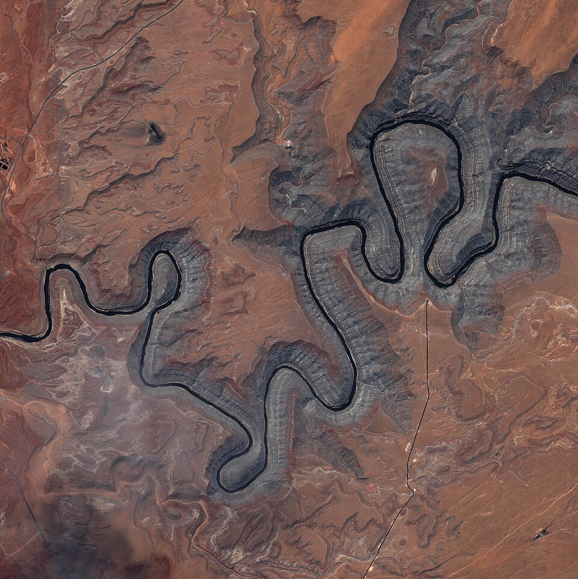
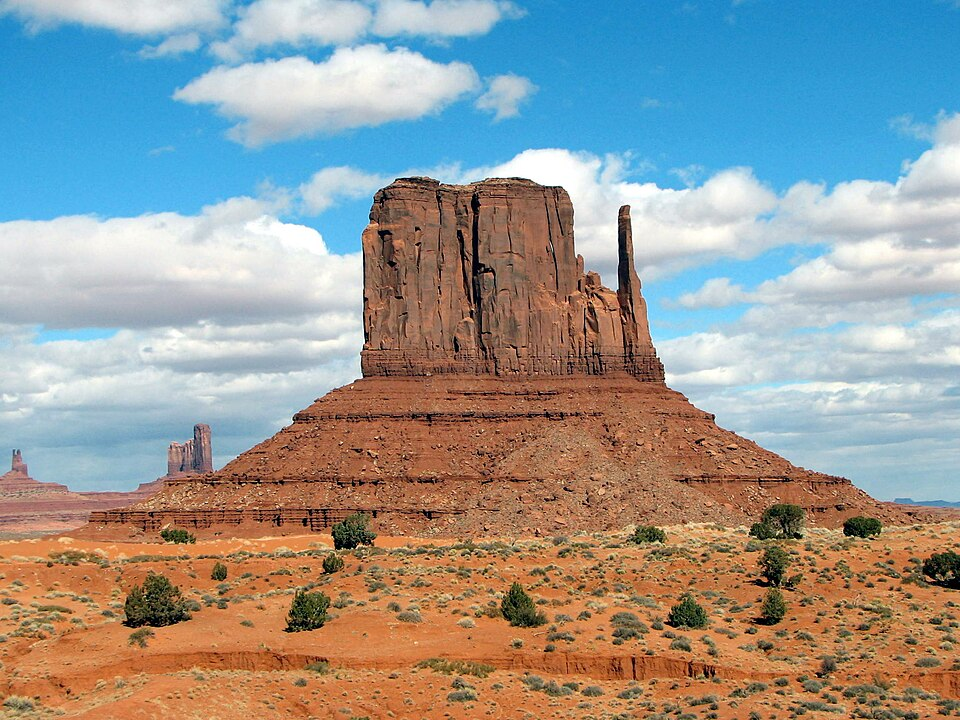
🎯 Must-Visit En Route
🏕️ Muley Point Camp Strategy
🌅 Muley Point Rim Walk
- Where
- The rim itself at sunset — the Mittens go dark silhouette against an orange sky.
- Why It Matters
- Monument Valley from above and afar is completely different from inside it. You're at the same elevation as the mesa tops. The scale becomes comprehensible.
- Worth It?
- You're already there. This will be the image from the entire trip.
- Mexican Hat Lodge — call ahead: (435) 683-2220 (limited hours)
- Bluff UT (15 mi away) — more reliable fuel stop on Hwy 191
- Carry 2 extra gallons — no fuel on Cedar Mesa
![Day 12 — Page to Muley Point]()
📍 Your Coordinates → Google Maps
🎯 Choose Your Day
🗿 Grand Parade Trail (Kodachrome)
🏛️ Grosvenor Arch
🏕️ Grand Staircase BLM Dispersed Camping
![Day 13 — Muley Point to Kodachrome]()
Steps from the Rim Trail — walk from your tent to Sunrise Point in 5 minutes. Vault toilets, water, general store with showers nearby. Shuttle stop at campground entrance. Elevation: 8,000 ft — nights drop to 30°F in May, pack layers.
📍 North Campground → Google Maps | 📋 Recreation.gov Reservation
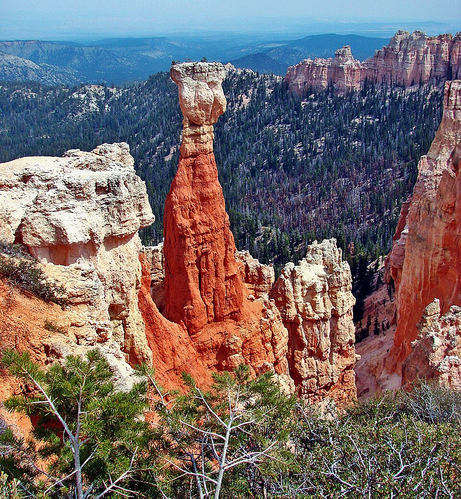
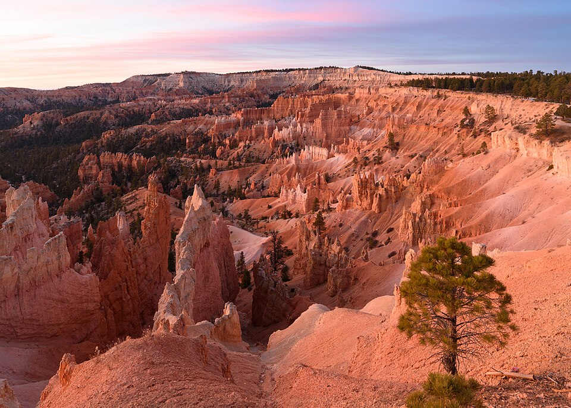
🎯 Three-Day Plan
🥾 Hikes in Detail
🔨 Navajo Loop Trail
👑 Queen's Garden Trail
🌅 Fairyland Loop
🏕️ Dispersed Camp Alternatives Near Bryce
- Where
- Walk 5 minutes from your tent. Arrive at Sunrise Point 20 minutes before sunrise. Bring coffee.
- Why It Matters
- The hoodoos light up in sequence from east to west as the sun rises over the canyon rim. They go from gray to gold to orange in under 10 minutes. This is the closing image of the entire trip.
- Worth It?
- It's 5 minutes from your tent. You're already there. Set the alarm. This is why you camped here.
- Bryce Canyon City fuel is 30% premium — avoid
- Panguitch UT on Hwy 89 (~15 min north) — significantly cheaper
- Fill in Panguitch for your May 5 drive home to SLC
📋 Quick Reference
Contacts, booking links, GPX files, and Land Cruiser trail notes
🔗 Essential Booking Links
📞 Emergency & Ranger Contacts
🗺️ GPX Track Files (included in download folder)
| Filename | Contents |
|---|---|
| Full_Trip_Overview.gpx | Complete route SLC → Bryce Canyon, all 22 waypoints, full overview track |
| Valley_of_Fire_to_Sedona.gpx | Fire Wave, White Domes, Petroglyph Canyon, both campgrounds |
| Edge_of_World.gpx | FR 231 route track + rim camp, Jenga Rocks, rig-accessible sites |
| Grand_Canyon_East_Rim.gpx | Desert View CG, Watchtower, Lipan Point, South Kaibab TH, Mather Point |
| Horseshoe_Bend_Page.gpx | Horseshoe Bend, Page hotels area, both canyons, Lone Rock Beach BLM |
| Muley_Point_Moki_Dugway.gpx | Full approach track, Moki Dugway base, Goosenecks, Muley Point, Valley of the Gods |
| Kodachrome_Grand_Staircase.gpx | Your coords, Kodachrome Basin SP, Grosvenor Arch, Cottonwood Canyon Road track |
| Bryce_Canyon_Full.gpx | North CG, all 6 major trailheads, Sunrise/Sunset/Inspiration/Bryce/Fairyland Points |
Import .gpx files directly into OnX Offroad, Gaia GPS, or Google Maps (My Maps). Download offline maps before leaving cell service.
🔧 Land Cruiser Trail Notes
- Air down to 25–28 PSI on rocky forest roads (FR 231, Cottonwood Canyon, Moki Dugway)
- Carry a hi-lift jack, traction boards, and 2-gallon water reserve minimum
- Recovery gear especially important on FR 231 (Edge of World) — remote, no cell service
- FR 231 (Edge of World): dry weather only. Clay becomes oil-slick when wet — leave immediately if rain starts
- Cottonwood Canyon Road: 4x4 strongly recommended. 2WD sedans get stuck regularly in ruts
- Muley Point Road: accessible in dry conditions to any high-clearance vehicle without 4x4
- Mescal 4x4 shortcut to Devil's Bridge (Sedona): use FR spur to cut 2 miles and 90% of crowds
- Schnebly Hill Road (Sedona): Red clay after rain stains permanently — scotchgard undercarriage before trip
- Grand Canyon East Rim roads (FR 302): generally good gravel, HC helpful but not required
Safe travels. The Southwest earns a permanent place in memory.
Take time to sit still in each place — the best moments are the ones you're not rushing through.